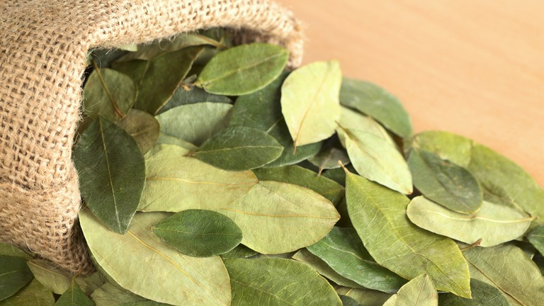

Coca-Cola inventor John Pemberton is known to have shared his original formula with at least four people before his death in 1888. In 1891, Asa Candler purchased the rights to the formula from Pemberton’s estate, founded The Coca-Cola Company, and instituted the shroud of secrecy that has since enveloped the formula. He also made changes to the ingredients list, which by most accounts improved the flavor, and also entitled him to claim that anyone in possession of Pemberton’s original formula no longer knew the “real” formula.
In 1919, Ernest Woodruff led a group of investors in purchasing the company from Candler and his family. As collateral for the acquisition loan, Woodruff placed the only written copy of the formula in a vault at the lending bank, Guaranty Bank in New York. In 1925, when the loan had been repaid, Woodruff relocated the written formula to the Trust Company Bank (now Truist Financial) in Atlanta. On December 8, 2011, the company placed it in a vault on the grounds of the World of Coca-Cola in Atlanta, where it remains on public “display”.
During the late 19th century, Coca-Cola was one of many popular coca-based drinks with purported medicinal properties and benefits to health; early marketing materials claimed that Coca-Cola alleviated headaches and acted as a “brain and nerve tonic”. Coca leaves were used in Coca-Cola’s preparation; the small amount of cocaine they contained – along with caffeine originally sourced from kola nuts – provided the drink’s “tonic” quality. In 1903, cocaine was removed, leaving caffeine as the sole stimulant ingredient, and all medicinal claims were dropped. By one account, the FDA still screens random samples of Coca-Cola syrup for the presence of cocaine.
A few sources claim that coca leaf extract, with the cocaine chemically removed, remains part of the formula as a flavoring. According to these accounts, the company obtains the ingredient from the Stepan Company of Maywood, New Jersey, which legally extracts cocaine from coca leaves for use in pharmaceuticals, then sells the processed leaf material for use in Coca Cola. The company will neither confirm nor deny this, deferring to the secret nature of the formula.
In 1911, the United States government sued The Coca-Cola Company for violations of the Pure Food and Drugs Act, claiming that the high concentration of caffeine in Coca-Cola syrup was harmful to health. The case was decided in favor of Coca-Cola, but a portion of the decision was set aside in 1916 by the Supreme Court. As part of a settlement, the company agreed to reduce the amount of caffeine in its syrup.
According to the company, only two employees are privy to the complete formula at any given time and they are not permitted to travel together. When one dies, the other must choose a successor within the company and impart the secret to that person. The identity of the two employees in possession of the secret is itself a secret. It has been noted, however, that the company’s “secret formula” policy is more of a marketing strategy than an actual trade secret: any competitor in possession of the genuine Coke recipe would be unable to obtain certain key ingredients, such as processed coca leaf (see below), and even if all components were available, could not market the reproduced product as Coca-Cola.